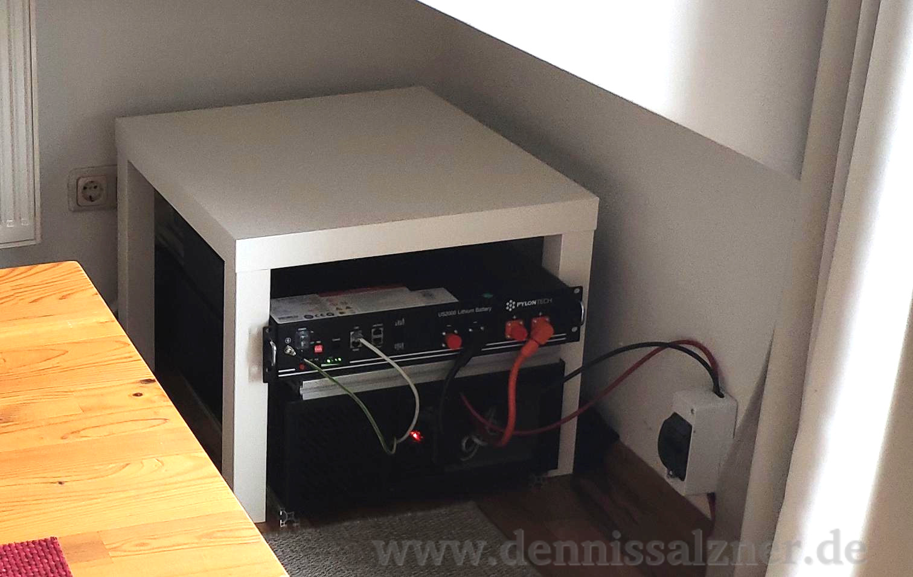
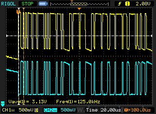

What
Introduction
With the increasing electricity costs, price reductions of components and overall trend to sustainable energy I’ve also joined in with the party of photovoltaic enthusiasts.
The initial setup of my solar power system is about 2 years ago. It’s an island system with a battery that does not feed into the grid and is completely off grid capable.
Note that in the meantime fully integrated systems (charge controller, inverter and battery) have become more affordable and plugin photovoltaic systems that feed into the power grid without a battery have become legal in many countries. These options are a lot easier to set up and may be better for most.
Currently the system powers our computers, television and refrigerator almost throughout the entire year with the exception of a month or two in the winter. We disconnect the appliances and connect them to the grid during this time. Currently I don’t have it set up to automatically switch to the grid, when the batteries are empty. The system is not large enough to handle peak power of the washing machine, electric stove or kettle and so these appliances are not connected.
As for producing enough energy to bring in buying costs of the components I’ll let you come to your own conclusions. The system likely will pay for itself some time in the future, but it’s hard to estimate the cost of critical components breaking down, the depreciation of the battery, chances and risks such as damage from storms, the insurance cost tradeoffs as well as the cost of personal time as well as moments of excitement, but also of utter frustrations when building such a system.

Contents
When
I2. How I got started
Around October 2021 I’ve installed by photovoltaic system. It has been running since with some hiccups since June 2023.
Prices for components had rapidly declined. I was seeing projects popping up on the internet. At the same time professional installations at a small scale are hardly affordable.
In the meantime even super markets and discounters are offering plug and play “balcony photovoltaic sets”. At that time these sets were more expensive and the legal aspects of producing electricity and feeding it into the grid weren’t clarified.
In the past months I had some technical troubles that led me reevaluate the system. In the process I’ll share my experience as a reference for myself, interested friends and family.
Why
I2. Why do this
Why go through all the trouble, expenses and risks associated with this project? I don’t know. It could save some money in the long run, it does mean maintenance effort, but why do anything - I just wanted to have this.
Background
I3. Components Overview
In order to build this I had to source, acquire and transport a number of components. I settled for quality components.
The core components of any island photovoltaic system are
- Solar Panels
- Battery
- Charger
- Inverter
The solar panels convert the energy of the sun into electricity. The charger (MPPT, Maximum Power Point Tracker) controls and normalizes the flow of electricity from the panels. The power is then fed into the batteries for storage and into the inverter for direct current to alternating current conversion so you can use the electricity for household electronics. When the sun is up, theoretically, electricity can travel from the panels to the controller to the inverter without flowing through the battery. When the sun is down that energy is taken from the battery.
I4. Wiring Overview
Thus, in a simplified image, we need the following connections:
Notice how excess electricity from the charge controller, that isn’t consumed by the inverter, is fed into the battery. As soon as the charge controller stops providing electricity the battery can feed in its stored energy.
Acquiring Components
Whats important to note is that all components need to be in balance with one another. A larger inverter would mean a higher power draw and hence more batteries. More solar panels would mean higher output voltage and hence a larger charger.
There is a sweet spot that a well balanced system can meet. I’ve decided to not power high power appliances such as the dish washer, washing machine and electric stove, because that would have meant scaling every component up to the point where space consumption, operational safety and cost, to me, don’t outweigh the benefits.
The components I’ve acquired, shops and prices are as below.
A1. Core Components
| Part | Model | Price | Ordered From | Order Date | Received Date |
|---|---|---|---|---|---|
| Solar Panels | 4x PV-Modul 385 Wp JA Solar | 716,00 Eur | Alpha Solar- und Heizungstechnik GmbH | 13.09.21 | 03.10.21 (Pick-Up by Car) |
| Battery | Pylontech US2000 LiFePO4 + Batteriekabel | 944,00 Eur | GreenAkku.de/Bosswerk GmbH | 13.09.21 | 17.09.21 |
| Charger | Victron BlueSolar 150/35 | 280,85 Eur | Amazon/OffgridtecGmbH | 23.09.21 | 24.09.21 |
| Inverter | Victron Phoenix Wechselrichter 48/1200 230V VE.Direct 1000W 48V | 449,96 Eur | Offgridtec GmbH | 03.10.21 | 05.10.21 (at Postal Office), 09.10.21 (Pick-Up) |
Note: I bought 4 panels, but am using only 2 of them due to space issues.
A2. Controller
Apart from the charge controller, you need some sort of computer to control the entire system, collect statistics, display errors, etc.
Here the “Victron CerboGX” is probably the safe bet, but I decided to use the open-source variant of the operating system “VenusOS” that runs on the CerboGX and run it on a Raspberry Pi 4 instead. I’ve had no problems with this approach for the past 2 years.
Note: the PylonTech batteries require a CAN-Interface, so we need an additional CAN-Hat for the Raspberry PI.
| Part | Model | Price | Ordered From | Order Date | Received Date |
|---|---|---|---|---|---|
| Controller | Raspberry Pi 3B+ | 48,00 Eur | Amazon/Rasppishop | 15.09.21 | 16.09.21 |
| Controller - Power | DSLRKIT PoE Splitter 48V to 5V | 9,50 Eur | Amazon/DSLRKIT | 15.09.21 | 16.09.21 |
| Controller - SD-Card | SanDisk Ultra 32 GB microSDHC | 6,99 Eur | Amazon | 15.09.21 | 16.09.21 |
| Controller - Battery Interface | WaveShare MCP2515 Isolated Expansion HAT | 24,95 Eur | Amazon | 17.09.21 | 24.09.21 |
In order to power the Raspberry Pi from the 48V Battery I’m using a simple Power-of-Ethernet (PoE)-Splitter. The internal transformer can convert 48V to 5V. You could use a standard smartphone power adapter, but then you would loose offgrid capability as your system would shut off, if there is a power outage from the grid.
A3. Data Connections
The RaspberryPi + VenusOS combination is cheaper, but requires some soldering for custom data cables. We need data cables from the controller to the Charge Controller, Inverter and battery.
| Part | Model | Price | Ordered From | Order Date | Received Date |
|---|---|---|---|---|---|
| Controller to Charger/Inverter Interface | 3x (2x are sufficient) JST PH 2.0mm Stecker26AWG 30cm Connector 4 Pin | 4,59 Eur | eBay | 16.09.21 | 18-20.09.21 |
| Controller to USB-TTL Adapter (VE.Direct Cables) | 2x FTDI FT232R | <2 Eur | eBay | leftovers | - |
| Controller to Pylontech Battery (VE.Can Cable) | Ethernet Cable | <2 Eur | ? | leftovers | - |
A4. Power Distribution
The high direct current (DC) voltage (>70 volts) from the solar system are a critical safety risk as a spark with direct current can produce a continuous arc. That can burn you and your surroundings. Alternating Current (AC) at 50 Hz interrupts continuous sparks 50 times per second, but can electrocute you as the 50 Hz causes muscles, including of the heart, to contract and release until they break down.
For high direct current voltages we need high cable cross sections and a fast quality disconnect switch. Otherwise we wouldn’t be able to disconnect the panels from the rest of the system in case of emergency due to the risk of an electric arc.
| Part | Model | Price | Ordered From | Order Date | Received Date |
|---|---|---|---|---|---|
| Solar Disconnect Switch | APV: 2P-63A | 29,70 Eur | eBay/elektriese_eu | 03.10.21 | 07.10.21 |
| Solar Disconnect Switch Case | Kleinverteiler IP30 1-reihig 2 Module | 6,29 Eur | eBay/asvendo | 08.10.21 | 09.10.21 |
| Solar Cable (Charge Controller to Disconnect Switch to Solar Panels) | 10m 6mm2 with MC4 plugs, red and black | 28,90 Eur | eBay/elektriese_eu | 03.10.21 | 07.10.21 |
| Battery Cable (Charge Controller to Battery and Battery to Inverter) | 2x 50cm Battery-Cable with soldering rings (Lötkabelschuh) | 18,98 Eur | eBay/mkcopter | 03.10.21 | 08.10.21 |
A5. Roof Mount
There are different types of mounts for “root seams” or “metal folds” (in german: “Stehfalz”, “Blechfalz”, “Doppelfalz”, not “RundFalz” or “Rib Clamp”). Some solutions require a beam underneath the panels. This adds additional complexity, parts that can loosen, etc. I was looking for simple certified clamps. The manufacturer “Aerocompact”, “K2 Systems” and “Schletter” produce such clamps, the later sells directly to customers.
I got these clamps in black for better looks. For mounting 4 modules in a 2x2 configuration I bought:
| Part | Model | Price | Ordered From | Order Date | Received Date |
|---|---|---|---|---|---|
| Roof Attachment | 12x Schletter Falzklemme 503 Rapid für Stehfalzdach | 12x 3,84 Eur = 46,08 Eur | photovoltaik4all.de | - | - |
| Panel Inbetween | 12x Schletter Mittelklemme Rapid 16 schwarz eloxiert 30 - 40 mm | 12x 2,59 Eur = 31,08 Eur | photovoltaik4all.de | - | - |
| Ladder | Krause Corda Sprossen-Mehrzweckleiter | 59 Eur | Bauhaus | 23.10.2021 | 23.10.2021 (Pick-Up) |
| Cable Binders | - | - | leftovers | - | - |
Mounting material total cost: 77,16 Eur (83,06 Eur with shipping)
note: I’m using many more clamps than the vendor suggests for extra safety.
A6. Total Cost
The total component cost is approx. 2708 Eur. At the time that was a good price for a 1540 WP system with a 2,4 kWh battery.
A7. Optional Additional Battery
Two years later I added a second battery, primarily to debug an issue. It helps the overall efficiency by buffering more energy during the days of the year with less sun light. The second battery also helps maintain a higher overall state of charge. That means less fully charging and fully discharging, which reduces battery wear.
The second battery cost a lot less due to price coming down and the tax reductions on photovoltaic equipment.
| Part | Model | Price | Ordered From | Order Date | Received Date |
|---|---|---|---|---|---|
| Battery | Pylontech US2000C LiFePO4 | 699,00 Eur | Offgridtec GmbH | 25.08.23 | 02.09.23 |
A8. Optional Automatic Switching
As we’ve connected the refrigerator with the photovoltaic system it can make sense to install an automatic switch that will switch to the grid when the battery is empty. I haven’t bought such a switch, but at the time I had planed to get one.
| Part | Model | Price | Ordered From | Order Date | Received Date |
|---|---|---|---|---|---|
| Power Transfer Switch | H-Tronic 1114530 MPC1000 (relay could stick?) | 39,40 € | - | - | - |
How
Installation
After acquiring components and tools, sorting out delivery and pickup of the 120cm by 60cm solar panels and other equipment I was finally ready to build the system.
M1. Mounting the panels
I then realized I needed a large ladder and picked one up at the local hardware store. That ladder barely fit into our car.

From there it was “just” a matter of mounting the panels onto the roof of the five story building.
Fortunately there is a balcony right under the dormer of the roof that I set out to mount the panels onto. The walls of the dormer have metal folds and there are special, storm approved, mounting brackets for solar panels. I’ve used twice as many brackets than suggested by the manufacturer, because I wanted to make absolute sure that these panels will stay on the roof.
Essentially you mount the bracket onto the metal fold. Then place the solar panel onto it. Then take the second type of bracket and tighten the module down as seen here:

Electronics, Data Cables
With the panels on the roof we can deal with the electronics.
The data cables for Victron equipement are expensive. As usual the wiring that was choosen is not standardized and that forces customers to buy the custom cables. While searching for DIY alternatives I’ve found many instruction manuals on how to wire custom cables that I’ve loosely followed (most notably [1]).
1] https://obenschlaefer.com/low-budget-energiemonitor-victron-venus-os-mit-raspberry-pi-obenschlaefer/
D1. Controller Power Cable
For the power cable from the 48V Battery to the Rasberry Pi, we’ll be using a PoE Splitter. For this a Custom LAN Cable that exposes the Power carrying wires is required.
- brown/brown-white is DC+
- blue/blue-white is DC-
- PoE Splitter connected
The end result looks like this:

D2. CAN Hat and TTL-Converter on the Raspberry Pi
Next we connect the CAN-HAT and the USB-TTL-Converters


D3. VE.CAN Cable to Battery
- Standard CAT-LAN-Cable
- Cable pin-outs see [1]
- Pylontech US2000 requires a “type B” cable
Type B
| Function | Victron VE.Can side | Battery side |
|---|---|---|
| GND | ~Pin 3~ | Pin 2 |
| CAN-L | ~Pin 8~ | Pin 5 |
| CAN-H | ~Pin 7~ | Pin 4 |
CAN-Bus pin-out from PylonTech battery instruction manual

1] https://www.victronenergy.com/live/battery_compatibility:can-bus_bms-cable#introduction
D4. VE.Direct Cable to Charger and Inverter

To create cables we need to measure the pin-outs of the Charge Controller. The bulk light blinks approx. once every second. Connect the adapter, connect a Lab-Power-Suppy, set it to 12 V, measure the pins of the cable.
The outer ones should be 5V and GND. The Pins inbetween are the TXD and RXD Pins.
On TTY Adapter side solder according to this image:
We can diagnose errornously swapped TXD/RXD connection on a computer. To test connect the USB-Adapter to a Desktop computer. Run picocom (or Putty in TTY-Mode on Windows) with a baud rate of 19200.


You should see date coming in from the charge controller.
sudo apt-get install picocom
picocom -b 19200 -r -l /dev/ttyUSB0note: always test. The second USB-TTL adapter I had was broken. Maybe I had broken it by reflashing before.
I didn’t have second Prolific PL2303, so I used an FTDI for the second cable. This works fine as well.

The second cable was annoying. The first PL2303 worked fine, it is labelled “USB TO TTL D-SUN”.
The second PL2303 was different. It is labelled “USB-TTL USB-STC-ISP” and didn’t work. It would show up fine on Linux, but doesn’t receive anything from the Victron Device. You can connect RXD and TXD together and it does properly echo signals back. I assume it’s a conterfeit chip that doesn’t apply the baudrate correctly.
Then I tried the FTDI FT232 adapter I had around. But at first that didn’t work either.
So I ordered two more PL2303. They cost approx. 2 Eur each only to find they had the same labels and also did not work.
On Windows they show up as “Prolific PL2303 Phased out since 2012” in the device manager. The “PL2303 Chip Checker tool” [2] shows “Fake Chip”. With a driver from a dubious source the device seems to be detected on Windows and the chip checker then claims it’s a “PL-2303 XA/HXA”. Prolific has also discontinued the drivers for many chips. But the real requirement is for the TTL adapter to work on Venus OS under Linux which it already didn’t.
I saw that [1] is using a CP2102 adapter and ordered one of those.
Before it arrived I tried the FTDI again and saw errors in the Linux dmesg log. So I switched the cable for another.
After rebooting the RaspberryPi it suddenly worked and I had both devices showing up.


So it seems there are lots of conterfeit or defunct PL2303 in circulation. And apparantly it is also important to reboot Venus OS when testing.
In the end I built both cables out of FTDI FT232R to free up the one golden working PL2303 for another project, where it is required for compatibility with an old Linux Kernel.
Also the original cables from Victron Energy seem to be FTDI-based (seen here [3]) making it a good choice.
see also:
1] https://obenschlaefer.com/low-budget-energiemonitor-victron-venus-os-mit-raspberry-pi-obenschlaefer/#USB_8211_VEDirect_Adapter_bauennbsp https://www.tarthorst.net/victron-ve-direct/ https://www.victronenergy.com/live/vedirect_protocol:faq https://www.sv-zanshin.com/r/manuals/victron-ve-direct-protocol.pdf 2] http://www.prolific.com.tw/US/ShowProduct.aspx?p_id=225&pcid=41 3] https://github.com/victronenergy/venus/issues/129
Software
S1. Download Venus OS Image
cd /mnt/volume/4-os/solar-venusos
wget https://updates.victronenergy.com/feeds/venus/release/images/raspberrypi2/venus-image-raspberrypi2-20210830185719-v2.73.rootfs.wic.gz
https://github.com/victronenergy/venus/wiki/raspberrypi-install-venus-image https://docs.updatefactory.io/devices/linux/writing-images/
S2. Write Image to SD-Card
sudo apt install bmap-tools
sudo bmaptool copy --nobmap /mnt/volume/4-os/solar-venusos/venus-image-raspberrypi2-20210830185719-v2.73.rootfs.wic.gz /dev/sdX
S3. Boot Up and Connect
- insert SD-Card
- connect a LAN Cable
- connect a smartphone charger with micro-USB
- check IP at the Router
- connects as “venus”, IP: 169.254.7.15
http://169.254.7.15
- Space bar opens menu
- navigate to Wifi and configure
- disconnect LAN cable, disconnect and reconnect power
- shows up as “rasberrypi2” “192.168.2.142” on WiFi
http://192.168.2.142
S4. Activate SSH Access and Connect
- enable superuser, see [1]:
To set the root password, first set the access level to Superuser:
- Go to Settings, General
- Set the Access Level to User and installer, the password is ZZZ
- Highlight Access Level (don't open the select page, ie. make sure you are in the General Page, not the Access Level page)
- Press and hold the right button of the center pad until you see the Access Level change to Superuser. Note: when working from the Remote Console, you need to use the right key on your keyboard. Pressing and holding the right button with your mouse won't work.
- set a root password
- enable “ssh on lan”
- connect with
ssh root@192.168.2.142
see:
- 1] https://www.victronenergy.com/live/ccgx:root_access
S5. Configure CAN-Bus
- Connect CAN-Bus Cable to Battery
Hardware Configuration:
- leave all DIP Switches on 0 on battery
- enable 120 Ohm Resistor on WaveShare 2 CH Pi Hat
- set to 3,3 V (not 5V !)
CAN Parameters:
- the Pylontech Battery communicates at 500 kbit/s
- the WaveShare 2CH Isolated Can Hat uses a 16 MHz Crystal (not visible on the board?)
Notes:
- the
vupdiagnostic application only works for victron devices and not the Pylontech Battery - the original Color GX (?) seems to support either 500 kbit/s (Pylontech Batteries) OR 250 kbit/s (Victron VE.CAN Devices) apparantly only the Venus GX could do both - so we’re better off with the Raspberry Pi approach
ip -s -d link show can0shows “can state ERROR-ACTIVE”, but this is not an error. It is the idle state of the MCP-Chip in normal operation.
Software Configuration:
ln -s /opt/victronenergy/can-bus-bms/service /service/can-bus-bms.can0
ln -s /opt/victronenergy/dbus-motordrive/service /service/dbus-motordrive.can0
ln -s /opt/victronenergy/dbus-valence/service /service/dbus-valence.can0
ln -s /opt/victronenergy/vecan-dbus/service /service/vecan-dbus.can0
ln -s /opt/victronenergy/mqtt-n2k/service /service/mqtt-n2k.can0
echo "can0" >> /etc/venus/canbus_ports
- replace
DEVwithcan0in all of
vi /opt/victronenergy/can-bus-bms/service/run
vi /service/dbus-valence.can0/run
vi /service/can-bus-bms.can0/run
vi /service/mqtt-n2k.can0/run
vi /service/vecan-dbus.can0/run
vi /service/dbus-motordrive.can0/run
- Set Oscillator and Interrupt according to [1]
- (other CAN Hats require different configurations and also adding can1 seems to break the boot process)
vi /u-boot/config.txt
dtparam=spi=on
dtoverlay=mcp2515-can0,oscillator=16000000,interrupt=23
Note: in read_me-canbusdebug.md - oscillator=8000000
vi /data/rcS.local
ip link set can0 up type can bitrate 500000
vi /etc/network/interfaces
auto can0
iface can0 inet manual
pre-up /sbin/ip link set can0 type can bitrate 500000
up /sbin/ifconfig can0 up
down /sbin/ifconfig can0 down
reboot
reboot
- under Settings -> Services -> CAN-Profile set “CAN-Bus BMS (500kbit/s)” in the VenusOS UI
1] https://www.waveshare.com/wiki/2-CH_CAN_HAT
The Battery should now be detected:
S6. Result
With that we can see all devices in VenusOS.
Electronics, Power Cables
Time to connect the power cables. I’ve chosen to build a simple bus bar myself. Here it’s crutial to use a non conductive sturdy base plate and keep the two wires far from one another to avoid sparks.
P1. Build the Bus Bar
The bus bar connects the battery, charge controller and inverter to eachother.
The Power-Suppy of the Raspberry Pi (the PoE Splitter) also connects to this same bus bar.
Since most of the DC Current travels through the Bus Bar we need to use thick cables and large screws.
For the bus bar I’m using square piece of wood in a junction box.
Wood doesn’t conduct electricity and keeps the wires apart. The junction box isolates the electricity.


P2. Solar Disconnect Switch
Since the Solar Panels produce a lot of power and are situated on the roof, we need a method to disconnect them from the rest of the system, in case we need to do maintanance. A solar disconnect switch can disconnect the panels and contain the sparks when disconnecting. I did not want to go cheap here and bought a quality switch and enclosure.


P3. Grounding
All devices need to be grounded to one another and perhaps to the building ground. My roof is also grounded for the panels. I’m using standard grounding cable from a standard power cord.

P4. Result
Debugging - Battery CAN-Bus
If the Battery doesn’t show up in Venus OS, you can try the following:
at the battery
- 1) check connections
- 2) switch off/on, press and hold red “sw” button for a few seconds
in VenusOS
- 1) verify that “Settings -> “Services -> CAN-bus (1) -> CAN-bus profile” is set to “CAN-bus BMS (500 kbit/s)” (Pylontech Batteries use 500 kbit/s).
- 2) verify that “NMEA2000-out” is on
- 3) check state, it should say “state says “error-active” “Error-Active” is not an error: “state is the actual MCP2515 state, so ERROR-ACTIVE is correct operation” “ERROR-PASSIVE or BUS-OFF are signs something is wrong.”
- 4) Check “Settings -> DVCC” is enabled and all else is disabled
via SSH
- 1) Check Interface correctly configured
ip -s -d link show can0
bitrate 500000
clock 8000000
- 2) check that “can0” is shown and that “RX bytes”/”TX bytes” are increasing
/sbin/ifconfig can0
- 3) Try to CAN Dump Messages
ifdown can0
ip link set can0 up type can bitrate 500000
ifup can0
candump can0
- 4) try to send CAN messages
cansend can0 000#01.01
cansend can0 135#02080426A10D112A
- 5) check DBus
dbus-spy
bitrate 500000 sample-point 0.750
tq 250 prop-seg 2 phase-seg1 3 phase-seg2 2 sjw 1
mcp251x: tseg1 3..16 tseg2 2..8 sjw 1..4 brp 1..64 brp-inc 1
clock 4000000
- 6) try to set queue length
sudo ifconfig can0 txqueuelen 65536
sudo ifconfig can1 txqueuelen 65536
- 7) try venus os tools
/opt/victronenergy/can-bus-bms/can-bus-bms -c socketcan:can0 --banner --log-before 25 --log-after 25 -vv
vup
/opt/victronenergy/vecan-dbus/vecan-dbus -c socketcan:can0 --banner --log-before 25 --log-after 25 -vv
linux configuration
- 1) check system logs
dmesg | grep -i '\(can\|spi\)'
- 2) check boot configuration matches CAN board
vi /u-boot/config.txt
- 3) bring interface up manually
ip link set can0 up type can bitrate 500000"
- 4) configure autostart
echo "ip link set can0 up type can bitrate 500000" > /data/rcS.local
or better in “ /etc/network/interfaces” (see above)
- 5) check modules loaded
lsmod | grep mcp251
mcp251x 20480 0
can_dev 28672 1 mcp251x
used is 0 for mcp251x
lsmod | grep can
can_raw 20480 1
can 28672 1 can_raw
can_dev 28672 1 mcp251x
- 6) or load modules manually
modprobe mcp251x
modprobe can_bcm
- 7) write symlinks (see above)
- 8) write can port configuration (see above)
- 9) set DEV to CAN0 in configuration files (see above)
at the electronics bench
- 1) make sure 120 ohm resistor is switched on at the CAN hat
- 2) connect one of the CAN-Interfaces of the Pi-Hat to the other, “cansend” from one and “candump” on the other
- 3) check tha battery is sending CAN signals via an Oscilloscope, when switching “on” and pressing the red “sw” button

- 4) verify voltage range around 2,5V and approx 100 kHz frequency with the oscilloscope
Finalize
I’ve clean-up the installation and mounted the electronics into a 4U Rackserver since. Since the system is in standard computer rack cases we can apply the “Ikea Lack Budget Server Rack” approach.
Just note that these components need proper airflow and are designed to be mounted vertically. I’ve added fans to support air flow.
Progress
Conclusion
The Victron VRM Portal has been tracking performance of the system since installation. This is what I’ve been getting out of the system with two of the four panels installed.
26.10.2021
First test run of the entire system. The weather was poor.
I was producing some energy (inverter was switched off):

If I can produce 57 W for an hour, that would be 0,057 kWh. That means it will take 42 hours to charge my 2,4 kWh battery in this weather condition.
We use approximately 7 kWh/day in our home. I can’t power all devices off of solar just yet due to the inverter size and cabling, but I should be able to offload some 2 kWh/day. I can’t go much further, because the battery can’t be fully discharged.
With two more of the 385 Wp solar panels it would probably make sense to add another battery.
19.06.2023
Ran until now. Battery issues with the PylonTech US2000. Back and forth with vendor.
01.09.2023
Installed new battery and system is running again.
As of 02.09.2023 the charger shows a total yield of 846.61 kWh.
Without accounting for system losses that would correspond to 391 Eur at 0.4627 Eur/kWh after 2 years of operation. That means about 195,5 Eur/Year savings. Total system cost was 2708 - 358 (minus two panels I’m not using) = 2350 Eur so it would take approx. 12 years in total to pay for itself, but by that time some components will likely have failed.
https://github.com/victronenergy/venus/wiki/RaspberryPi-CAN-Interfaces https://powerforum.co.za/topic/4307-venus-pi-pylontech-integration/ https://www.photovoltaikforum.com/thread/155662-pylontech-us2000c-mit-raspberrypi-und-venusos/ https://groups.google.com/g/victron-dev-venus/c/C4-3JhHpbcY https://en.racelogic.support/VBOX_Automotive/01General_Information/Knowledge_Base/How_do_I_know_if_terminating_resistors_are_required%3F - "CAN High and CAN Low for it to work correctly. For maximum range over long distances, the ideal termination is one 120 Ohm resistor" https://www.victronenergy.com/live/battery_compatibility:pylontech_phantom - CAN-bus BMS (500 kbit/s) - turn 120 Ohm Resistor on on Shield https://www.beyondlogic.org/adding-can-controller-area-network-to-the-raspberry-pi/ https://forum.peak-system.com/viewtopic.php?t=3198 https://github.com/linux-can/can-utils/issues/128 https://e2e.ti.com/support/processors-group/processors/f/processors-forum/970090/am6548-linux-kernel-freeze-easily-after-sending-message-by-can-bus https://stackoverflow.com/questions/40424433/write-no-buffer-space-available-socket-can-linux-can https://www.photovoltaikforum.com/thread/155662-pylontech-us2000c-mit-raspberrypi-und-venusos/?postID=2290241#post2290241 https://community.victronenergy.com/articles/38710/victron-raspi-hat.html https://www.primesolar.eu/wp-content/uploads/PylonTech-mit-EasySolar_Einrichtung.pdf https://powerforum.co.za/topic/4307-venus-pi-pylontech-integration/ https://www.holzheizer-forum.de/forum/user-post-list/119-solarengel/?pageNo=2 https://groups.google.com/g/victron-dev-venus/c/C4-3JhHpbcY https://groups.google.com/g/victron-dev-venus/c/C4-3JhHpbcY "Then selected CAN-bus profile ve.can & canbus bms 250kbits/s" https://www.setfirelabs.com/building-automation/pylontech-us2000-us3000-nodemcu-can-reader - connecting the pylontech to NodeMCU Wifi Chips https://www.waveshare.com/wiki/2-CH_CAN_HAT